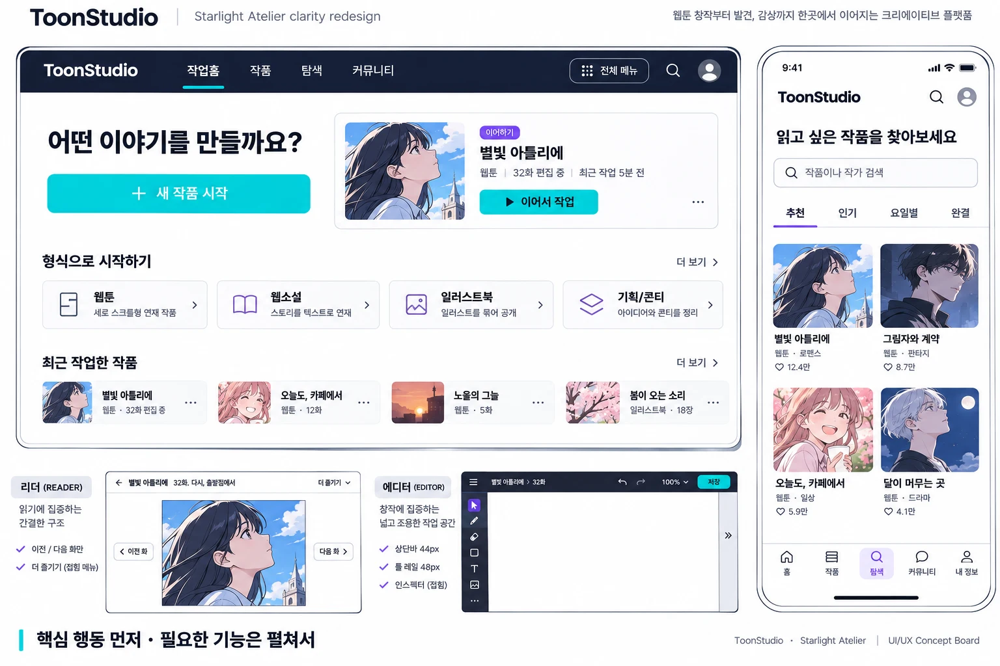

STARLIGHT ATELIER / CLARITY STUDY
한 화면에는,
한 가지 중요한 일.
지금 할 일을 먼저 보여주고, 필요한 도구를 그 곁에 둡니다. 만들기부터 발견·감상·협업까지 같은 언어로 이어지는 ToonStudio의 사용 흐름 개선안입니다.
01 / PROPOSED COMPOSITION
화면이 먼저 설명하도록
기존 Starlight의 보라·청록 의미 색상과 작품 중심 정체성을 유지합니다. 아래 HTML 시안은 정보 위계 제안이며 실제 앱 스크린샷이 아닙니다.
작업 홈 · 데스크톱 제안 시안 · targetStarlight · 기존 테마 유지

 그림자와 계약웹툰 · 판타지
그림자와 계약웹툰 · 판타지 오늘도, 카페에서웹툰 · 일상
오늘도, 카페에서웹툰 · 일상01 주 행동은 한곳에
첫 방문은 새 작품, 돌아온 사용자는 이어하기. 같은 버튼을 여러 안내 카드에 반복하지 않습니다.
02 선택지는 필요한 순간에
상세 설정과 도구 설명은 접어서 보관합니다. 검색·목록·캔버스가 첫 화면을 차지합니다.
03 복귀 경로는 일관되게
전체 메뉴와 목록 복귀는 같은 이름을 씁니다. 오류 안내는 재시도할 대상을 함께 보여줍니다.
＋ 생성된 데스크톱·모바일 콘셉트 보드 보기 Paper 변형

02 / EVERY ROUTE FAMILY
같은 구조로, 다른 일을
전 경로를 아래 계열로 묶어 주 목적·선택 노출·복구를 정했습니다. 계열별 설계는 target이며, 이번 공통 셸 수정은 현재 업무 뒤로 창작 활용 안내를 옮기고 CTA를 접힌 안내 안에 둔 범위입니다.
편집기·제작 보드·관리자 등 몰입형 작업 화면은 기존 문서·권한·저장·복구 경계를 따릅니다. 화면 계열 계약이 기능의 통합·완성이나 경로별 수동 재설계를 뜻하지 않습니다.
03 / EXISTING STARLIGHT BOARDS
기존 A–P · M1–M4 시안과 연결
기존 보드는 원본을 유지합니다. 각 보드의 시각 자산과 기능 범위를 새 정보 위계에 맞춰 해석하며, 이 문서의 제안과 실제 반영 상태를 구분합니다.


04 / SOURCE-BACKED ROUTE REGISTER
441개 주소, 하나의 점검 원장
경로와 소스 파일을 검색하거나 화면 계열을 선택하세요. 주소를 펼치면 해당 계열의 목표와 실제 라우트 선언 근거를 확인할 수 있습니다. 각 경로의 런타임 성공은 이 정적 원장과 별도입니다.
조건에 맞는 경로가 없습니다. 검색어를 줄이거나 필터를 초기화하세요.
이 원장은 314개 앱 선언과 Studio·관리자·학습 하위 권위를 AST로 통합했습니다. 별칭·리다이렉트·합성 ID를 포함하므로 441개 독립 페이지를 모두 재설계·수동 검증·배포했다는 뜻이 아닙니다.